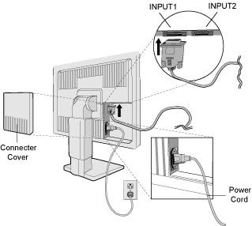
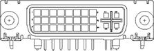
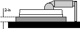

Operating Documentation
Direction 5193891-800, Rev# 5
LightSpeed 5.X Pro16 Limited Access Service Information (Adv)
Operating Documentation |
Illustration 1: LCD Monitor Connections

VIDEOSIGNAL / DDC 1: Monitor rear side DVI-I (analog & digital)
VIDEOSIGNAL / DDC 2: Monitor rear side 15-pin D-Sub (according to PC 99)
Table 1: LCD Monitor - HD D-Sub Connector Pin-Out
| PIN - ASSIGNMENT OF 15-PIN D-SUB: | |||||
|---|---|---|---|---|---|
| 1 | Red Video | 6 | Red Ground | 11 | Monitor Ground |
| 2 | Green Video | 7 | Green Ground | 12 | DDC-Serial Data |
| 3 | Blue Video | 8 | Blue Ground | 13 | H-Sync. |
| 4 | No Connection | 9 | +5V input * | 14 | V-Sync. |
| 5 | DDC-Return | 10 | Logic Ground | 15 | DDC-Serial Clock |
| * In case the power of the PC unit is switched off and the power of the monitor is switched on, no voltage may occur at pin 9. | |||||
Illustration 2: LCD Monitor - HD D-Sub Connector Pin-Out
Table 2: LCD Monitor - DVI Connector Pin-Out
| PIN - ASSIGNMENT OF DVI CONNECTOR | |||||
|---|---|---|---|---|---|
| 1 | TX2- | 9 | TX1- | 17 | TX0- |
| 2 | TX2+ | 10 | TX1+ | 18 | TX0+ |
| 3 | Shield (TX2 / TX4) | 11 | Shield (TX1 / TX3) | 19 | Shield (TX0 / TX5) |
| 4 | TX4- | 12 | TX3- | 20 | TX5- |
| 5 | TX4+ | 13 | TX3+ | 21 | TX5+ |
| 6 | DDC-Serial Clock | 14 | +5V power * | 22 | Shield (TXC) |
| 7 | DDC-Serial Data | 15 | Ground (H/V sync) | 23 | TXC- |
| 8 | V-Sync. (analog) | 16 | Hot plug detect | 24 | TXC+ |
| C1 | Red Video (analog) | C2 | Green Video (analog) | C3 | Blue Video (analog) |
| C4 | H-Sync. (analog) | C5 | Ground (analog) | -- | -- |
| * In case the power of the PC unit is switched off and the power of the monitor is switched on, no voltage may occur at pin 14. | |||||
Illustration 3: LCD Monitor - DVI Connector Pin-Out

To raise or lower screen, place hands on side of the monitor and lift or lower to the desired height. See Illustration 4.
Illustration 4: Raise or Lower LCD Monitor Screen

Grasp both sides of the monitor screen with your hands and adjust the tilt and swivel as desired.
Illustration 5: LCD Monitor Tilt and Swivel

To prepare the monitor for alternate mounting purposes:
Disconnect all cables.
Place hands on each side of the monitor and lift up to the highest position.
Place monitor face down on a non-abrasive surface. (Place the screen on a 2-inch platform so that the stand is parallel with the surface.) Refer to Illustration 6.
Remove the stand cover by sliding the top/bottom pieces off the stand. Remove the 4 screws connecting the monitor to the stand and lift off the stand assembly. The monitor is now ready for mounting in an alternate manner. Refer to Illustration 7.
Reverse this process to reattach stand.
Illustration 6: Place LCD monitor face down

Illustration 7: Remove stand from monitor

| NOTE: | Use only VESA-compatible alternative mounting method. |
| Please use the attached screws (4 pcs) when mounting. To fulfill the safety requirements the monitor must be mounted to an arm which guaranties the necessary stability under consideration of the weight of the monitor. The LCD monitor shall only be used with an approved arm (e.g. GS mark). | |
OSM™ (On-Screen Manager) control buttons on the front of the monitor function as follows:
To access OSM menu, press any of the control buttons ( , -,
+).
, -,
+).
To change DVI/D-SUB signal input, press the NEXT button.
To rotate OSM between Landscape and Portrait modes, press the RESET button.
| NOTE: | OSM must be closed in order to change signal input and rotate. |
| Menu | |
|---|---|
| EXIT | Exits the OSM controls. |
| Exits to the OSM main menu. | |
| CONTROL / | Moves the highlighted area left/right to select control menus. |
| Moves the highlighted area up/down to select one of the controls. | |
| ADJUST - / + | Moves the bar left/right to increase or decrease the adjustment. |
| Active Auto Adjust function. | |
| Enter the Sub Menu. | |
| NEXT | Moves the highlighted area of main menu right to select one of the controls. |
| RESET | Resets the highlighted control menu to the factory setting. |
| Resets the highlighted control to the factory setting. |
| NOTE: | When RESET is pressed in the main and sub-menu, a warning window will appear allowing you to cancel the RESET function by pressing the EXIT button. |
- BRIGHTNESS
Adjusts the overall image and background screen brightness.
- CONTRAST
Adjusts the image brightness in relation to the background.
AUTO - AUTO ADJUST (Analog input only)
Adjusts the image displayed for non-standard video inputs.
AUTO - Automatically adjusts the Image Position and H.Size settings and Fine settings.
- LEFT / RIGHT
Controls Horizontal Image Position within the display area of the LCD.
- DOWN / UP
Controls Vertical Image Position within the display area of the LCD.
- H. SIZE
Adjusts the horizontal size by increasing or decreasing this setting.
- FINE
Improves focus, clarity and image stability by increasing or decreasing this setting.
AccuColor® Control Systems: Six color presets select the desired color setting (sRGB and NATIVE color presets are standard and cannot be changed). Color temperature increases or decreases, in each preset. R, Y, G, C, B, M, S: Increases or decreases Red, Yellow, Green, Cyan, Blue, Magenta and Saturation depending upon which is selected. The change in color will appear on screen and the direction (increase or decrease) will be shown by the color bars. NATIVE: Original color presented by the LCD panel that is unadjustable.
sRGB: sRGB mode dramatically improves the color fidelity in the desktop environment by a single standard RGB color space. With this color supported environment, the operator could easily and confidently communicate color without further color management overhead in the most common situations.
- SMOOTHING: Select one of three image sharpness settings. This function is only valid when the expanded display function (expansion function) is on.
TEXT MODE: Use this to display text clearly.
NORMAL MODE: This sharpness is between TEXT and GRAPHIC MODE.
GRAPHIC MODE: This mode is suited for images and photographs.
- EXPANSION MODE: Sets the zoom method.
FULL: The image is expanded to 1280 x 1024,regardless of the resolution.
ASPECT: The image is expanded without changing the aspect ratio.
OFF: The image is not expanded.
CUSTOM (DIGITAL INPUT & RESOLUTION OF 1280x1024 ONLY): Select one of seven expansion rates.In this mode the resolution may be low and there may be blank areas.This mode is for use with special video cards.
- VIDEO DETECT: Selects method of video detection when more than one computer is connected.
FIRST DETECT: The video input has to be switched to “FIRST DETECT” mode. When current video input signal is not present, then the monitor searches for a video signal from the other video input port.If the video signal is present in the other port, then the monitor switches the video source input port to the new found video source automatically. The monitor will not look for other video signals while the current video source is present.
LAST DETECT: The video input has to be switched to the “LAST DETECT” mode. When the monitor is displaying a signal from the current source and a new secondary source is supplied to the monitor, then the monitor will automatically switch to the new video source. When current video input signal is not present, then the monitor searches for a video signal from the other video input port. If the video signal is present in the other port, then the monitor switches the video source input port to the new found video source automatically.
NONE: The Monitor will not search the other video input port unless the monitor is turned on.
DVI SELECTION: This function selects the DVI input mode. When the DVI selection has been changed, you must restart your computer.
DIGITAL: DVI digital input is available.
ANALOG: DVI analog input is available.
- LANGUAGE: OSM™ control menus are available in seven languages.
- OSM POSITION: You can choose where you would like the OSM control image to appear on your screen. Selecting OSM Location allows you to manually adjust the position of the OSM control menu left, right, down or up.up
- OSM TURN OFF: The OSM control menu will stay on as long as it is use. In the OSM Turn Off submenu, you can select how long the monitor waits after the last touch of a button to shut off the OSM control menu. The preset choices are 10,20,30,45,60 and 120 seconds.
- OSM LOCK OUT: This control completely locks out access
to all OSM control functions. When attempting to activate OSM controls while
in the Lock Out mode, a screen will appear indicating the OSM controls are
locked out. To activate the OSM Lock Out function, press , then and
hold down simultaneously. To de-activate the OSM Lock Out, press , then and
hold down simultaneously.
- RESOLUTION NOTIFIER: This optimal resolution is 1280x1024. If ON is selected, a message will appear on the screen after 30 seconds, notifying you that the resolution is not at 1280x1024.
- FACTORY PRESET: Selecting Factory Preset allows you to reset all OSM control settings back to the factory settings. The RESET button will need to be held down for several seconds to take effect. Individual settings can be reset by highlighting the control to be reset and pressing the RESET button.
- DISPLAY MODE: Provides information about the current resolution display and technical data including the preset timing being used and the horizontal and vertical frequencies.
Increases or decreases the current resolution. (Analog input only)
 - MONITOR INFO: Indicates the model and serial numbers
of your monitor.
- MONITOR INFO: Indicates the model and serial numbers
of your monitor.
OSM™ Warning: OSM Warning menus disappear with Exit button.
NO SIGNAL: Gives a warning when there is no signal present. After power is turned on or when there is a change of input signal or video is inactive, the No Signal window will appear.
RESOLUTION NOTIFIER: Gives a warning of use with optimized resolution. After power is turned on or when there is a change of input signal or the video signal doesn’t have proper resolution, the Resolution Notifier window will open. This function can be disabled in the TOOL menu.
OUT OF RANGE: This function gives a recommendation of the optimized resolution and refresh rate. After the power is turned on or there is a change of input signal or the video signal doesn’t have proper timing, the Out Of Range menu will appear.
CHECK CABLE: This function will advise you to check all Video Inputs on the monitor and computer to make sure they are properly connected.
| NOTE: | If “ CHANGE DVI SELECTION” is displayed switch to DVI SELECTION. |